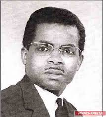

Raoul Georges Nicolo

Raoul Georges Nicolo (1923–1993) foi um engenheiro e físico nuclear guadalupense, pioneiro no desenvolvimento de tecnologias em telecomunicações e energia nuclear. Ele foi o primeiro guadalupense a obter um doutorado em Ciências pela Universidade de Paris em 1962.
Principais Contribuições
- Telecomunicações: Desenvolveu o bloco de comutação para televisores multicanais, permitindo que um único aparelho recebesse múltiplos canais de forma eficiente.
- Energia Nuclear: Criou dispositivos para controle de reatividade de pilhas atômicas, melhorando a segurança dos reatores nucleares franceses.
Educação e Carreira
- Formado em engenharia elétrica pela École Centrale d'Électronique em Paris.
- Primeiro guadalupense a obter doutorado em Ciências pela Universidade de Paris.
- Trabalhou na Compagnie Thomson Houston, onde desenvolveu tecnologias para televisores multicanais.
- Ingressou no Comissariado de Energia Atômica da França, contribuindo para avanços na segurança nuclear.
Legado e Homenagens
- O Lycée Polyvalent Raoul Georges Nicolo em Basse-Terre recebeu seu nome em sua homenagem.
- A cidade de Le Gosier celebra seu legado com eventos e homenagens ao seu trabalho.
- Seu impacto nas telecomunicações e na energia nuclear continua sendo reconhecido na França e em Guadalupe.
Saiba mais
Voltar